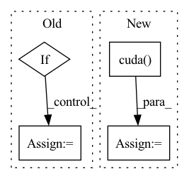

Pattern ID :2604

Before Change
loss = 0
n = torch.sum(y_true[..., 4] == 1)
if n != 0:
//---------------------------------------------------------------//
// 计算预测结果和真实结果的giou
//----------------------------------------------------------------//
giou = self.box_giou(pred_boxes, y_true[..., :4])
loss_loc = torch.mean((1 - giou)[y_true[..., 4] == 1])
loss_cls = torch.mean(self.BCELoss(pred_cls[y_true[..., 4] == 1], self.smooth_labels(y_true[..., 5:][y_true[..., 4] == 1], self.label_smoothing, self.num_classes)))
loss += loss_loc * self.box_ratio + loss_cls * self.cls_ratio
After Change
if self.cuda:
y_true = y_true.cuda()
noobj_mask = noobj_mask.cuda()
box_loss_scale = box_loss_scale.cuda()
//-----------------------------------------------------------//
// reshape_y_true[...,2:3]和reshape_y_true[...,3:4]
// 表示真实框的宽高，二者均在0-1之间
// 真实框越大，比重越小，小框的比重更大。
In pattern: SUPERPATTERN
Frequency: 3
Non-data size: 4
Instances
Fragment ID: 8462177
Project Name: bubbliiiing/yolov5-pytorch
Commit Name: d49e041b6f4ef50c5d94ce88d33d147f3227bc77
Time: 2022-01-15
Author: 47347516+bubbliiiing@users.noreply.github.com
File Name: nets/yolo_training.py
M Class Name: YOLOLoss
N Class Name: YOLOLoss
M Method Name: forward(4)
N Method Name: forward(4)
M Parent Class: nn.Module
N Parent Class: nn.Module
M File Name: nets/yolo_training.py
N File Name: nets/yolo_training.py
M Start Line: 158
M End Line: 198
N Start Line: 156
N End Line: 200
'>
Before Change
// print("hello0")
// 下面是使用CFR
crf_model = CRF(self.num_token_type, batch_first=True)
if USE_CUDA:
crf_model = crf_model.cuda()
if not is_test:
log_likelihood = crf_model(ner_score, data_item["token_type_list"].to(torch.int64),
mask=data_item["mask_tokens"])
After Change
// 下面是使用CFR
if USE_CUDA:
self.crf_model = self.crf_model.cuda()
if not is_test:
log_likelihood = self.crf_model(ner_score, data_item["token_type_list"].to(torch.int64),
mask=data_item["mask_tokens"])
loss_ner = -log_likelihood
'>
Fragment ID: 8462182
Project Name: mangonihao/multiheadjointentityrelationextraction_simple
Commit Name: 3a8d46652627013ee302506e87489ee75fea8ae9
Time: 2021-03-08
Author: 2075419247@qq.com
File Name: modules/joint_model.py
M Class Name: JointModel
N Class Name: JointModel
M Method Name: forward(4)
N Method Name: forward(4)
M Parent Class: nn.Module
N Parent Class: nn.Module
M File Name: modules/joint_model.py
N File Name: modules/joint_model.py
M Start Line: 128
M End Line: 139
N Start Line: 130
N End Line: 165
'>
Before Change
image_token = torch.multinomial(probs, 1)
image_tokens += [image_token]
if self.is_verbose:
token = int(image_token.detach().numpy())
print("image token {} is {}".format(i, token))
return torch.cat(image_tokens)
After Change
image_tokens: List[LongTensor] = []
keys_values_state = torch.zeros(self.keys_values_state_shape)
if torch.cuda.is_available():
keys_values_state = keys_values_state.cuda()
image_token = self.start_token
for i in range(self.sample_token_count):
token_index = self.token_indices[i:i+1]
'>
Fragment ID: 8462185
Project Name: kuprel/min-dalle
Commit Name: 17c96fe110fad3d48ea591dcd46475f521499770
Time: 2022-06-28
Author: brkuprel@gmail.com
File Name: min_dalle/models/dalle_bart_decoder_torch.py
M Class Name: DalleBartDecoderTorch
N Class Name: DalleBartDecoderTorch
M Method Name: forward(3)
N Method Name: forward(3)
M Parent Class: nn.Module
N Parent Class: nn.Module
M File Name: min_dalle/models/dalle_bart_decoder_torch.py
N File Name: min_dalle/models/dalle_bart_decoder_torch.py
M Start Line: 205
M End Line: 222
N Start Line: 206
N End Line: 212